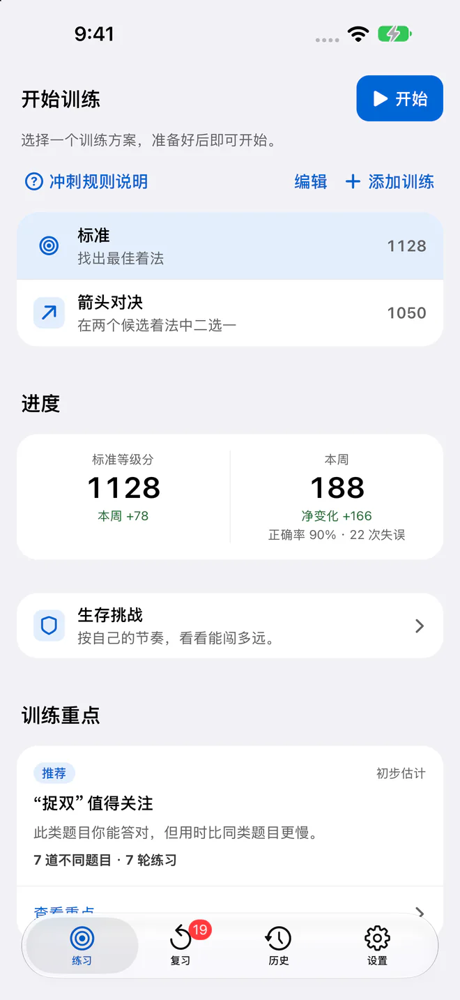
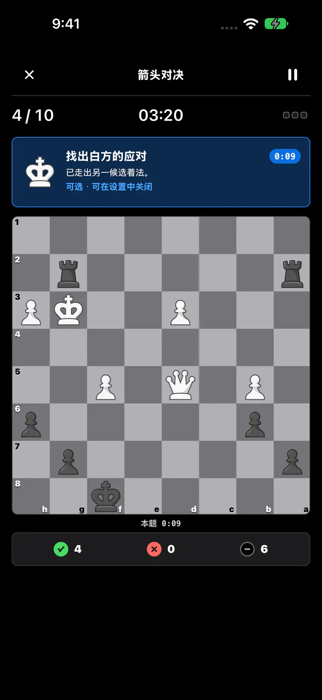
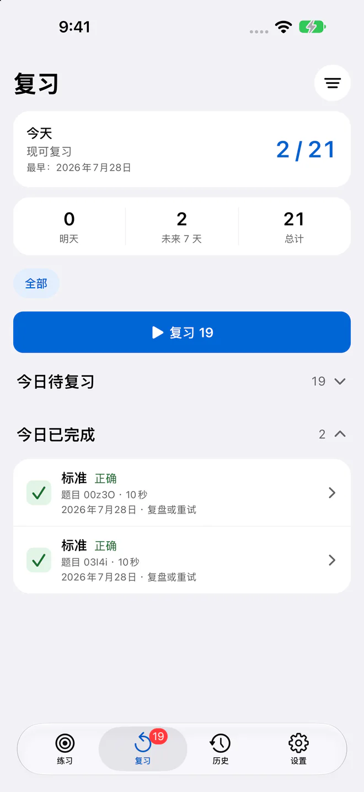
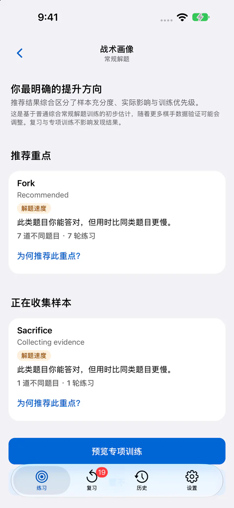
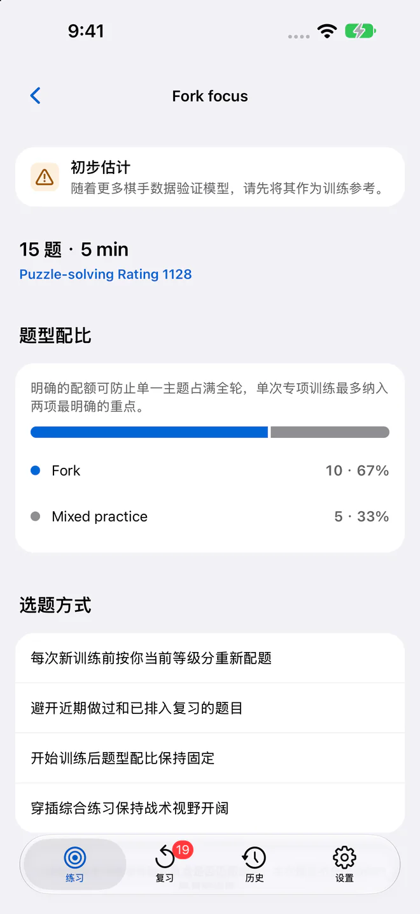
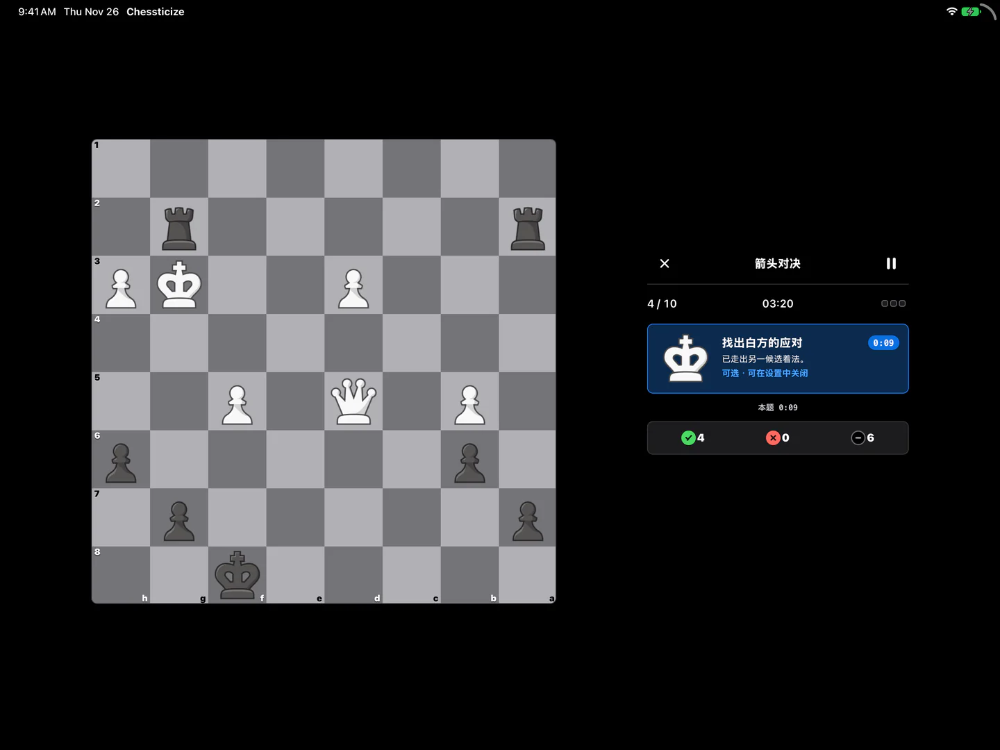

定时复习把值得再看的题目及时带回。
答错与存疑的题目会在到期时重新出现。你也可以随时自由重做局面以回顾路线，且不会改变原有的复习计划。

专项训练从初步估计出发，最终由你做主。
可根据战术画像中的初步估计预览专项训练，也可以自行挑选战术主题、节奏与难度。


私密练习，为棋盘留出更大空间。
Chessticize 在移动端完全离线运行，无广告也无需账号。在 iPhone 与 iPad 上，可选开启私人 iCloud 同步以在你的 Apple 设备间合并进度，并可随时关闭。
